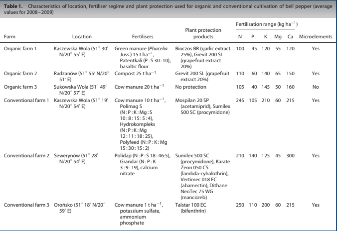

Em dic Claudia i sóc alumne de programació de 4B de l'institut Pompeu Fabra
He analitzat en l'activitat de reserca d'informació si el pebrot convencional té més nutrients que l'orgànic, per fer-ho he anat a Google acadèmic i he escrit en el buscador "pepper conventional ecologic" i he trobat un article científic que estudia quin es millor. L'article és Hallmann i Rembiałkowska et al, 2011 i estudia que mostren un nivell més alt de compostos bioactius en orgànics les fruites del pebrot en comparació amb les fruites convencionals
A continuació pots veure una imatge on es mostren els resultats: 